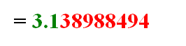

计算方法(数值分析)
第1章 数值分析与科学计算引论¶
误差和有效数字 基本概念
避免危害
数值分析: 将复杂的计算式转换为指令集中定义过的+、- (×、÷)输入到计算机中, 得到近似解
1.2 误差的背景介绍¶
1.2.1 来源与分类¶
| 来源 | 分类 |
|---|---|
| 从实际问题中抽象出数学模型 | 模型误差 |
| 通过测量得到模型中参数的值 | 观测误差 |
| 求近似解 | 方法误差(截断误差) |
| 机器字长有限 | 舍入误差 |
1.2.2 误差与有效数字¶
绝对误差¶
绝对误差: \(e^* = x^* - x, 其中x为精确值, x^*为x的近似值\)
- 精确值\(x^*\)通常不可求得, 我们只能求出近似值
绝对误差限: \(|e^*|的上限即为\varepsilon^*, 称为\textcolor{#66ccff}{绝对误差限}\)
- 工程上常记为\(x = x^* \pm e^*\), 如\(\int_0^1e^{-x^2}dx=0.743\pm0.006\)
- 注意:
- e* 理论上讲是唯一确定的，可能取正，也可能取负。
- e > 0 不唯一，当然 e 越小越具有参考价值。
相对误差¶
相对误差: \(e_r^* = \frac{e^*}x ≈ \frac{e^*}{x^*}\\\)
相对误差限: \(\varepsilon_r^* (= \frac{\varepsilon^*}{x}) = \frac{\varepsilon^*}{|x^*|}\\\)
有效数字¶
看不懂的有效数字定义: 用科学记数法, 记\(近似值x^*=a_1.a_2a_3...a_n*10^m(其中a_1\neq 0)\), 若\((|e^*|=)\ |x^*-x|\leq \textcolor{red}{0.5}*10^{m-n+1}\)(即\(a_n\)的截取按照四舍五入规则), 则称\(x^*\)为n位有效数字, 精确到\(10^{m-n+1}\)
- \(m+1\): \(x^*\)小数点前的位数 \(n\): 有效位数 \(m-n+1\): 小数点后位数 (经过四舍五入的结果)
- 有效数字即为绝对误差限
有效数字与相对误差的关系¶
有效数字→相对误差限
- 已知\(x^*\)有n位有效数字, 其相对误差限为 \(\begin{aligned}\varepsilon_r^*&=\left|\frac{\varepsilon^*}{x^*}\right|=\frac{0.5\times10^{-(n-1)}\times10^m}{a_1.a_2\cdots a_n\times10^m}=\frac{10^{-(n-1)}}{2\times a_1.a_2\cdots}\leq\frac1{2a_1}\times10^{-(n-1)}\end{aligned}\)
相对误差限→有效数字
- 已知 x* 的相对误差限可写为\(\varepsilon_r*=\frac1{2(a_1+1)}\times10^{-(n-1)}\\\)
- 则: \(\begin{aligned}\mid x-x^*\mid&\leq\varepsilon_r^*\cdot\mid x^*\mid=\frac{10^{-(n-1)}}{2(a_1+1)}\times a_1.a_2\cdots\times10^m\\&<\frac{10^{-(n-1)}}{2(a_1+1)}\cdot(a_1+1)\times10^m=0.5\times10^{m-n+1}\end{aligned}\)
- \((a_1+1)\)是为了通过不等式消除\(0.a_2a_3...\)
例: 为使\(\pi^*\)的相对误差小于0.001%,至少应取几位有效数字？
-
需求: 从有效数字确定相对误差限
- 设\(\pi^*\)取n位有效数字, 则其相对误差限为\(\varepsilon_r^*\leq\frac1{2a_1}\times10^{-n+1}\)
- 要保证相对误差小于0.001%, 只要保证\(\varepsilon_r^*\leq\frac1{2a_1}\times10^{-n+1}<0.001\%\)
- 已知 \(\pi的a_1 = 3\)，则从以上不等式可解得 \(n > 6 - log6\)，即\(n \geq 6\)，应取\(\pi^* = 3.14159\)
数值运算中的误差限¶
误差传递公式
误差: \(\varepsilon = x^*-x\), 相对 误差\(\varepsilon_r=\frac \varepsilon{x^*}\\\), 函数值相对误差\(\frac{f(x^*)-f(x)}{f(x^*)}\\\)
相对误差限比值(条件数): \(C_p=|\frac{f(x^*)-f(x)}{f(x^*)}|/|\varepsilon_r|\approx|\frac{xf'(x^*)}{f(x^*)}| \\\)
误差限公式
- 经过\(f(x)\)计算, 相对误差会被放大
加法: \(y^*=x_1^*+x_2^*\)
- \(\varepsilon(y^*)\leq\varepsilon(x_1^*)+\varepsilon(x_2^*)\) 误差限直接相加
乘法: \(y^*=x_1^*\cdot x_2^*\)
- \(\varepsilon(y^*)\leq|x_2^*|\varepsilon(x_1^*)+|x_1^*|\varepsilon(x_2^*)\)
- 会受\(|x_1^*|, |x_2^*|\)影响
除法: \(y^*=\frac{x_1^*}{x_2^*}\\\)
- \(\varepsilon(y^*)\leq\frac{|x_2^*|\varepsilon(x_1^*)+|x_1^*|\varepsilon(x_2^*)}{\left|x_2^*\right|^2}\\\)
- \(|x_2^*|\downarrow\ \Rightarrow\ \varepsilon(y^*)↑↑\)
- 要尽量避免除法的出现, 防止误差暴涨
其他注意事项¶
- 避免小分母: 分母过小会造成浮点溢出
- 避免相近二数相减
- 会导致有效数字减少
- 几种经验性避免方法：
- \(\sqrt{x+\varepsilon}-\sqrt{x}=\frac\varepsilon{\sqrt{x+\varepsilon}+\sqrt{x}};\quad\ln(x+\varepsilon)-\ln x=\ln(1+\frac\varepsilon x);\\\)
- 当 | x | << 1 时：\(\begin{aligned}&1-\cos x=2\sin^2\frac x2;\\&e^x-1=x\left(1+\frac12x+\frac16x^2+...\right)\end{aligned}\)
- 避免大数吃小数
- 计算机浮点运算, 指数对齐导致的基数部分丢失
- 尽量减少运算次数
- 使用秦九昭算法
第2章 插值法¶
插值多项式的唯一性
拉格朗日插值公式, 误差, 余项
差商, 均差, 均差的性质
牛顿插值多项式的形式, 误差
- 2.3.4 不用
埃尔米特插值
- 例题, 三个点值+一个点的导数的计算
- 均差表绘制方式
分段低次插值: 知道概念即可
?
三次样条插值 不用
什么是插值法
当精确函数 y = f(x) 非常复杂或未知时，在一系列节点 \(x_0 … x_n\)处测得函数值\(y_0 = f(x_0), … yn _= f(x_n)\)，由此构造一个简单易算的近似函数 \(P(x) ≈ f(x)\)，满足条件\(P(x_i) = f(x_i) (i = 0, … n)\)。这里的 P(x) 称为f(x) 的插值函数。
最常用的插值函数是多项式
.assets/image-20240314084348302.png)
插值多项式¶
为了使插值函数更方便在计算机上运算,一般插值函数都使用代数多项式和有理函数
代数插值多项式的存在唯一性¶
设函数\(y=f(x)\)在区间[a,b]上的代数插值多项式为\(P(x)=a_0+a_1x+a_2x^2+...+a_nx^n, P_n(x_i)=y_i, i=0, 1,2,...,n\) 书上的命名是\(L(x)\)
即多项式\(P_n(x)\)的系数\(a_0, a_1, ...,a_n\)满足线性方程组
\(\begin{cases}a_0+a_1x_0+a_2x_0^2+...+a_nx_0^n=y_0 \\ a_0+a_1x_1+a_2x_1^2+...+a_nx_1^n=y_1\\......\\ a_0+a_1x_n+a_2x_n^2+...+a_nx_n^n=y_n\end{cases}\)
上述方程组的系数行列式为n+1阶的Vandermond行列式 (\(x_0, x_1...\)是已知量)
\(V=\left | \begin{matrix} 1 & x_0 & ... & x_0^n \\ 1 & x_1 & ... & x_1^n \\ ... & ... & ... & ... \\ 1 & x_n & ... & x_n^n \\ \end{matrix} \right | =\prod_{i=0}^{n-1}\prod_{j=i+1}^n(x_j-x_i) \neq 0 (x_i\neq x_j)\)
定理: 满足\(P(x_i)=y_i, i=0,1,...,n\) , 次数不超过n的插值多项式一定唯一存在
- 若多项式次数≠n, 则插值多项式不唯一 例如\(P(x)=L_n(x)+p(x)\prod_{i=0}^n(x-x_i)\)也是一个插值多项式，其中p(x)可以是任意多项式。
2.2 拉格朗日插值¶
2.2.1 线性插值&抛物线插值¶
插值的目的是求出n次多项式\(P(x)=a_0+a_1x+a_2x^2+...+a_nx^n\ 使得\ P_n(x_i)=y_i, i=0,1,...,n\)
线性插值¶
即n=1, 已知\(y_0=f(x_0), y_1=f(x_1)\) 求\(P_1(x)=a_0+a_1x\)满足\(P_1(x_0)=y_0, P_2(x_1)=y_1\)
由几何意义易得
\(\begin{aligned} \boldsymbol{P_{1}}(\boldsymbol{x})& =y_0+\frac{y_1-y_0}{x_1-x_0}(x-x_0) \\ &={\left[\frac{x-x_1}{x_0-x_1}\right]}y_0+{\left[\frac{x-x_0}{x_1-x_0}\right]}y_1=\sum_{i=0}^{1}\textcolor{red}{l_i(x)}y_i \end{aligned}\) \(\begin{aligned} l_0(x)=\frac{x-x_1}{x_0-x_1}\\l_1(x)=\frac{x-x_0}{x_1-x_0}\end{aligned}\)
抛物线插值¶
即n=2, … 略!
2.2.2 拉格朗日插值多项式¶
定义—n次插值基函数
若n次多项式\(l_j(x)(j=0,1,...,n)\)在\(n+1\)个节点\(x_0<x_1<...<x_n\)上
满足条件\(l_j(x_k)=\delta_{jk}=\begin{cases}1,&k=j\\0,&k\neq j\end{cases}\quad j,k=0,1,...,n\),
则称这n+1个n次多项式\(l_0(x), l_1(x),...,l_n(x)\)为插值节点\(x_0,x_1,...,x_n\)上的n次插值基函数
与上面的例子类似, 可以推导得出n次插值基函数为\(\begin{aligned} l_k(x)& =\frac{(x-x_0)(x-x_1)\cdots(x-x_{k-1})(x-x_{k+1})\cdots(x-x_n)}{(x_k-x_0)(x_k-x_1)\cdots(x_k-x_{k-1})(x_k-x_{k+1})\cdots(x_k-x_n)} \\ &=\prod_{i=0}^n\frac{\left(x-x_i\right)}{\left(x_k-x_i\right)}\quad\quad k=0,1,2,\cdots,n \\ \end{aligned}\)
- (分子只少了一项\(x-x_k\), 分母对应的少一项\(x_k-x_k\))
所以\(\color{blue}L_n(x)=\sum_{k=0\\}^ny_kl_k(x)\), 由\(l_k(x)\)的定义可知\(L_n(x_j)=\sum_{k=0\\}^n y_kl_k(x_j)=y_j,j=0,1,...,n\) 满足插值多项式的定义
将形如上述\(L_n(x)\)的插值多项式称为拉格朗日(Lagrange)插值多项式
拉格朗日插值多项式基函数的简化写法
记\(\omega_{n+1}(x)=(x-x_0)(x-x_1)...(x-x_n)\), 可得\(\omega_{n+1}^{\prime}(x_k)=(x_k-x_0)(x_k-x_1)\cdot \cdot\cdot (x_k-x_{k-1})(x_k-x_{k+1})\cdot \cdot \cdot (x_k-x_n)\) (导数乘法公式)
得\(\begin{aligned} l_k(x)& \begin{aligned}&=\frac{(x-x_0)(x-x_1)\cdots(x-x_{k-1})(x-x_{k+1})\cdots(x-x_n)}{(x_k-x_0)(x_k-x_1)\cdots(x_k-x_{k-1})(x_k-x_{k+1})\cdots(x_k-x_n)}\end{aligned}=\textcolor{blue}{\frac{\omega_{n+1}(x)}{\omega_{n+1}^{\prime}(x_k)(x-x_k)}}\quad\quad\quad k=0,1,2,\cdots,n \end{aligned}\)
公式总结:
2.2.3 插值余项&误差估计¶
设区间[a, b]上f(x)的差值多项式为n阶的\(L_n(x)\), 令余项\(R_n(x) = f(x) - L_n(x)\)
显然, 在插值节点\(x_i\)上有\(R_n(x_i) = f(x_i) - L_n(x_i) = 0\)
因此, \(R_n(x)\)在[a, b]上有n+1个零点
设\(R_n(x) = K(x)\omega_{n+1}(x);\quad \omega_{n+1}(x) = (x-x_0)(x-x_1)...(x-x_n)\)
此时有\(R_n(x) = K(x)\omega_{n+1}(x) = f(x) - L_n(x)\)
….
得
拉格朗日型余项定理:
2.3 均差与牛顿插值多项式¶
2.3.1 插值多项式的逐次生成¶
Lagrange插值多项式的基函数为\(l_i(x)=\prod_{j=0\and j\neq i}^{n}\frac{(x-x_j)}{(x_i-x_j)}\)
当需要增加节点时, 所有基函数\(l_i(x)\)都需要重新计算
考虑使用一种逐次生成插值多项式的方法, 记为\(P_n(x)\)
\(对0次插值,P_0(x)=f(x_0)\)
对1次插值, \(\begin{cases}P_1(x_0)=f(x_0)\\P_1(x_1)=f(x_1)\end{cases}\)
- \(P_1(x)=f(x_0)+\frac{f(x_1)-f(x_0)}{x_1-x_0}(x_1-x_0)(点斜式)=P_0(x)+a_1(x-x_0)\)
对2次插值, \(\begin{cases}P_2(x_0)=f(x_0)\\P_2(x_1)=f(x_1)\\P_2(x_1)=f(x_2)\end{cases}\)
- \(P_2(x)=P_1(x)+a_2(x-x_0)(x-x_1)\)
可得, \(P_n(x)=a_0+a_1(x-x_0)+a_2(x-x_0)(x-x_1)+...+a_n(x-x_0)(x-x_1)...(x-x_n)\)
其中\(a_0, a_1, ...,a_n可由P_n(x_i)=f(x_i)\)计算得到
这样计算下去会变得很麻烦, 定义均差来表示他们
2.3.2 均差及其性质¶
差商(均差, devided difference)的定义:
- 是递归定义的
- k+1阶差商只需要任选两个k阶差商相减, 并没有固定选择的要求
- 所以在上面选择了\(f[x_0,...,x_{k-1},x_{k+1}]\)作为减数
均差的性质 ※¶
①k阶均差-f(x)的线性表示
②差商与x的顺序无关
- 如 \(f[x_0,x_1,x_2]=f[x_0,x_2,x_1]=f[x_2,x_1,x_0]\)
③k阶差商与k阶导
当\(f^{(k)}(x)\)在包含节点\(x_0,x_1,\cdots,x_k\)的区间存在时，在\(x_0,x_1,\cdots,x_k\)之间必存在一点\(\xi\),使得\(f[x_0,x_1,\cdots,x_k]=\frac{f^{(k)}(\xi)}{k!}\\\)
2.3.3 牛顿插值多项式¶
\(N_n(x)=\alpha_0+\alpha_1(x-x_0)+\alpha_2(x-x_0)(x-x_1)+....+\alpha_n(x-x_0)...(x-x_{n-1})\)
\(\left.\left\{\begin{array}{cccc|c}f(x)=f(x_0)+f[x,x_0](x-x_0) & \\ f[x,x_0]=f[x_0,x_1]+f[x,x_0,x_1](x-x_1) \\ ....................\\ f[x,x_0,...,x_{n-1}]=f[x_0,...,x_{n}]+f[x,x_0,...,x_{n}](x-x_{n})\quad& \end{array}\right.\right.\)
把后一式带入前一式得
由上面的式子可以得出, n阶插值多项式\(P_n(x)=f[x_0,...,x_n]x^n+?x^{n-1}+...+?x+?1\), 最高项系数一定为n阶差商
↑可以用来证明性质1(结合拉格朗日插值公式)
具体计算方式: 画出差商表
2.4 埃尔米特插值¶
埃米特插值: 不仅要求函数值相等, 还要求若干阶导数相等
埃尔米特插值: 要求插值函数 P (x) 满足\(P(x_i) = f (x_i), P’ (x_i) = f ’ (x_i),…, P^{(m)} (x_i) = f^{ (m)} (x_i)\)
注意:
- N个条件可以确定N-1阶多项式
- 要求在1个节点\(x_0\)处直到m阶导数都重合的插值多项式即为Taylor多项式
- \(\begin{gathered} \begin{aligned}P(x)=f(x_0)+f'(x_0)(x-x_0)+...+\frac{f^{(m)}(x_0)}{m!}(x-x_0)^m\end{aligned} \\ \textbf{其余项为}\quad R(x)=f(x)-P(x)=\frac{f^{(m+1)}(\xi)}{(m+1)!}(x-x_0)^{(m+1)} \end{gathered}\)
- 一般只考虑\(f\)与\(f ’\)的值。
Hermite插值计算出的多项式次数
给定n+1个点前面的插值函数最高只有n阶 (列出n+1个方程, 解得n个待定系数)
两点三次Hermite插值¶
考虑只有两个节点的插值问题
设\(f(x)\)在节点\(x_0,x_1\)处的函数值为\(y_0,y_1\) 在节点 \(x_0,x_1\)处的的一阶导数值为 \(y_0^{\prime},y_1^{\prime}\)
两个节点最高可以用\(2\times1+1=3\)次\(Hermite\)多项式\(H_{3}(x)\)
\(H_3(x)\)应满足插值条件
用四个基函数表示\(\color{blue}H_3(x) = y_0α_0(x) + y_1\alpha_1(x)+y_0'\beta_0(x)+y'\beta_1(x)\)
可得
因为\(H_3(x)\)是3次多项式, 所以\(\alpha_0(x)\)最高也为3次, \(\color{orange}\begin{cases}\alpha_0(x_0)=1&\alpha_0'(x_0)=0&①\\\alpha_0(x_1)=0 &\alpha_0'(x_1)=0&②\end{cases}\)
- 在\(x_1\)处, \(\color{orange}②\quad \alpha_0(x_1)=\alpha_0'(x_1)=0\), 即\(x_1\)为\(\alpha_0\)的二重零点, 函数值为0, 导数也为0 可设\(\color{blue}\alpha_0(x)=(x-x_1)^2(\alpha x+b)\)
- 在\(x_0\)处, \(\color{orange}①\quad \alpha_0(x_0)=1\ \ \alpha_0'(x_0)=0\) , 代入得\(a=-\frac2{\left(x_0-x_1\right)^3}\quad b=\frac1{\left(x_0-x_1\right)^2}+\frac{2x_0}{\left(x_0-x_1\right)^3}\)
代入得
类似可得
代入\(\color{blue}H_3(x) = y_0α_0(x) + y_1\alpha_1(x)+y_0'\beta_0(x)+y'\beta_1(x)\) 得
两点三次Hermite插值的余项¶
两点三次Hermite插值的误差为\(R_3(x) = f(x)-H_3(x)\)
有\(\(\begin{cases} R_3(X_i) =f(x_i)-H_3(x_i)=0 \\ R_3^{\prime}(X_i) =f^{\prime}(x_i)-H^{\prime}_3(x_i)=0 \end{cases} \qquad i=0,1\)\)
所以\(x_0, x_1\)均为\(R_3(x)\)的二重零点, 可设\(R_3(x) = K(x)(x-x_0)^2(x-x_1)^2, K(x)待定\)
设辅助函数\(\varphi(t)=f(t)-H_3(t)-K(x)(t-x_0)^2(t-x_1)^2\)
则有
至少有5个零点 (\(\varphi(x_0), \varphi(x_1)四个, \varphi(x)至少一个\))
用4次Rolle定理, 即可得, \(至少存在一点\xi \in[x_0, x_1], 使得\varphi^{(4)}(x)=0\), 即 \(\varphi^{(4)}(\xi) = f^{(4)}(\xi)-4!K(x) = 0 \quad(H_3(x)三次,导没了)\)
所以,两点三次Hermite插值的余项为
高次Hermite插值¶
作为多项式插值,三次已是较高的次数，次数再高就有可能发生Runge现象
因此，对有n+1节点的插值问题，我们可以使用分段两点三次Hermite插值
三点+一导数 插值¶
将导数的值算作两个点相近的一阶差商, 使用牛顿插值计算
例：求一个次数不高于3的多项式\(P_3(x)\)，使其满足\(P_3(0)=0,P_3(1)=1,P'_3(1)=3,P_3(2)=1\) 。

这里相当于设置了四个点0, 1, 1, 2, 其中一阶差商f[0,1], f[1,2]正常计算
对f[1, 1]
- 观察差商定义\(f[x_0,x_i]=\frac{f(x_1)-f(x_0)}{x_1-x_0}\)和导数定义\(f'(x_0)=lim_{h→0}\frac {f(x_0+h)−f(x_0)}{h}\)
- 可以发现\(f[x_0, x_0]=f'(x_0)\)
2.5 分段低次插值¶
Runge现象¶
\(\textbf{在}[-5,5]\textbf{上考察}f(x)=\frac1{1+x^2}\textbf{ 的}L_n(x)\text{。 取 }x_i=-5+\frac{10}ni\quad(i=0,...,n)\)
- n越大，端点附近抖动越大，称为Runge现象 (\(L_n(x) \not\rightarrow f (x)\))
分段线性插值¶
在每个区间\([x_i, x_{i+1}]\)上，用1阶多项式 (直线) 逼近 f (x):
- 当取区间(\(max|x_{i+1}-x_i|\))小时, 逼近f(x)
- 但是失去了光滑性
分段Hermite插值¶
\(给定x_0, . . . , x_n; y_0, . . . , y_n; y_0^{\prime }, . . . , y_n^{\prime }\) 在\([ x_i, x_{i+ 1}] { 上 利 用 两 点 的 }y{及 }y\)’构造3次Hermite函数
- 导数一般不易得到。
第三章 不需要了
第4章 数值积分¶
概论
- 求积节点 求积系数概念
- 待定系数的确定
- 求积公式余项证明p102公式 梯形公式余项
Newton-Cotes公式
- 一阶二阶
- 稳定性 为什么不用这个公式
- 偶阶xxx
复合求积公式
- 复合梯形, 辛普森 及其余项
- p108 例题
龙贝格求积公式
- 龙贝格算法 (注意什么时候停止计算
- p113 例6
4.5
- 自适应skip
- 高斯: 知道概念
- 高斯 lelangde公式
4.1 数值积分概论¶
4.1.1 数值积分基本思想¶
对于积分 \(I(f)=\int_a^bf(x)dx\)
如果知道\(f(x)\)的原函数\(F(x)\), 则由牛顿-莱布尼茨公式有
但是在工程和科研中, 常出现以下问题
- \(f(x)\)的解析式不存在, 只给出了\(f(x)\)的数值
- \(f(x)\)的原函数\(F(x)\)求不出来, 如\(F(x)\)不是初等函数
- \(f(x)\)表达式复杂, \(F(x)\)很难求出
简单的积分近似计算方式:
- 求积节点一般是给定的, 我们的目标就是确定求积系数\(A_k\)
4.1.2 插值多项式计算积分¶
积分的近似计算方法很多,但为方便起见,最常用的一种方法是利用插值多项式来构造数值求积公式,具体步骤如下:
在积分区间\([a, b]\)上取n+1个插值节点\(a\leq x_0< x_1...< x_n\leq b\)
\(f(x)\)的n次插值多项式: \(L_n(x) = \sum_{k=0}^nf(x_k)l_k(x), l_k(x)为插值基函数\)
用\(L_n(x)\)作为\(f(x)\)的近似, 此时积分的计算为
设求积系数\(A_k=\int_a^bl_k(x)dx\)则\(f(x)\)的积分\(I(f)=\int_a^bf(x)dx\approx\sum_{k=0}^nA_kf(x_k)=I_n(f)\)
4.1.3 代数精度¶
定义 若求积公式\(\int_a^bf(x)dx\approx\sum_{k=0}^nA_kf(x_k)\)
- 对任意次数不超过\(m\)次 的代数多项式 \(P_i( x) ( i\leq m)\)都准确成立，即\(\int_a^bP_i(x)dx=\sum_{k=0}^nA_kP_i(x_k)\quad i=0,1,\cdots,m\)
- 但对\(m+1\)次多项式却不能准确成立，即只要\(\int_a^bx^{m+1}dx\neq\sum_{k=0}^nA_kx_k^{m+1}\)
- 则称该求积公式具有m次的代数精度
例: 求梯形公式的代数精度
例：对于\([a,b]\)上1次插值，有 \(L_1(x)=\frac{x-b}{a-b}f(a)+\frac{x-a}{b-a}f(b)\) \(\Longrightarrow A_1=A_2=\frac{b-a}2\quad\Longrightarrow\int_a^bf(x)dx\approx\frac{b-a}2[f(a)+f(b)]\) 考察其代数精度。
解：逐次检查公式是否精确成立
代入0次的代数多项式\(P_0=1:\int_a^b1dx=b-a=\frac{b-a}2[1+1]\)
代入1次\(P_1=x:\int_a^bxdx=\frac{b^2-a^2}2=\frac{b-a}2[a+b]\)
代入2次\(P_{2}= x^{2}: \int _{a}^{b}x^{2}dx= \frac {b^{3}- a^{3}}3\neq \frac {b- a}2[ a^{2}+ b^{2}]\)
4.2 Newton-Cotes数值求积分¶
4.2.1 NewTon-Cotes公式¶
牛顿–柯特斯公式
Newton-Cotes公式是指等距节点下使用Lagrange插值多项式建立的数值求积公式
设函数\(f(x)\in C[a,b]\), (\(C[a,b]: 在[a,b]上连续的函数集合\))
将积分区间\([a,b]\)分割成n等分, 各个节点为\(x_k = a + kh, h = \frac{b-a}{n}\)
使用Lagrange插值得: \(L_n(x)=\sum_{k=0}^nf(x_k)l_k(x)\quad R_n(x)=\frac{f^{(n+1)}(\xi)}{(n+1)!}\omega_{n+1}(x)\\\)
- 其中 \(l_k(x)=\prod_{\substack{0\leq j\leq n\\j\neq k}}\frac{x-x_j}{x_k-x_j}\quad\xi\in[a,b]\quad\omega_{n+1}(x)=\prod_{i=0}^n(x-x_i)\)
此时积分准确值\(I = \int_a^bf(x)dx = \int_a^b[L(x)+R(x)]dx = \int_a^bf(x_k)l(x_k)dx + \int_a^bR(x)dx = \sum_{k=0}^n A_kf(x_k)+\int_a^bR(x)dx\\\)
- 其中 \(A_k=\int_a^bl_k(x)dx=\int_a^b\prod_{0\leq j\leq n \and j\neq k}\frac{x-x_j}{x_k-x_j}dx\\\)
令\(I_n(f)=\sum_{k=0}^nA_kf(x_k)\\R(I_n)=\int_a^bR_n(x)dx\)得, \(I(f) = I_n(f)+R(I_n), I(f)\approx I_n(f)\)
- n阶Newton-Cotes求积公式: \(I_n(f)=\sum_{k=0}^nA_kf(x_k)\)
- Newton-Cotes公式的余项: \(R(I_n)=\int_a^bR_n(x)dx \quad 其中, R_n(x)=\frac{f^{(n+1)}(\xi)}{(n+1)!}\omega_{n+1}(x)\\\)
Ak的计算与Cotes系数
\(A_k=\int_a^bl_k(x)dx=\int_a^b\prod_{0\leq j\leq n \and j\neq k}\frac{x-x_j}{x_k-x_j}dx\\\)
\(A_k=\begin{pmatrix}b-a\end{pmatrix}\cdot C_k^{(n)}\)
\(\therefore I_n(f)=\sum_{k=0}^nA_kf(x_k)=\begin{pmatrix}b-a\end{pmatrix}\cdot \sum_{k=0}^nC_k^{(n)}f(x_k)\\\)
- \(C_k^{(n)}\)称为Cotes系数
- Cotes 系数仅取决于 n和k，可查表得到。与 f (x) 及区间[a, b]均无关。
4.2.2 低阶Newton-Cotes公式及其余项¶
在Newton-Cotes公式中,n=1,2,4时的公式是最常用也最重要三个公式,称为低阶公式
梯形公式¶
梯形求积公式
梯形求积公式(两点公式): \(T=I_1(f)=\frac{(b-a)}2[f(a)+f(b)]\\\)
梯形公式余项
\(R_n(x)=\frac{f^{(n+1)}(\xi)}{(n+1)!}\omega_{n+1}(x)\)
\(R(T)=R(I_1)=\int_a^bR_1(x)dx\)
\(\begin{aligned} R(T)& =\int_a^b\frac{f''(\xi_x)}{2}(x-a)(x-b)dx \\ &=\frac{f^{\prime\prime}(\eta)}2\int_a^b(x-a)(x-b)dx \\ &=-\frac{f^{\prime\prime}(\eta)}2\frac{(b-a)^3}6 \\ &=-\frac{(b-a)^3}{12}f^{\prime\prime}(\eta) \end{aligned}\)
\(\therefore\ \mid R(T)\mid\leq\frac{(b-a)^3}{12}M_2\quad M_2=\max_{x\in[a,b]}\mid f^{\prime\prime}(x)\mid\)
- 梯形(trapezia)公式具有1次代数精度
Simpson公式¶
Simpson求积公式(三点公式, 抛物线公式): \(\begin{aligned}S=I_2(f)&=(b-a)[\frac16f(x_0)+\frac46f(x_1)+\frac16f(x_2)]\\&=\frac{b-a}6[f(a)+4f(\frac{a+b}2)+f(b)]\end{aligned}\)
Simpson公式的余项: \(R(S)=R(I_2)=\int_a^bR_2(x)dx =-\frac{b-a}{180}\Big(\frac{b-a}{2}\Big)^4f^{(4)}(\eta)\\\)
- Simpson公式具有3次代数精度
| 公式 | 余项\(R[f]\) | 步长h | 余项\(R[f]\) (用h表示) | 代数精度 | |
|---|---|---|---|---|---|
| n=1(梯形公式) | \(\frac{(b-a)}2[f(a)+f(b)]\\\) | \(-\frac{(b-a)^3}{12}f^{\prime\prime}(\xi)\\\) | \(b-a\) | \(-\frac{(b-a)^3}{12}f^{\prime\prime}(\xi), \xi\in[a,b]\\\) | 1 |
| n=2(Simpson公式) | \(\frac{b-a}6[f(a)+4f(\frac{a+b}2)+f(b)]\\\) | \(-\frac{b-a}{180}(\frac{b-a}2)^4f^{(4)}(\xi)\\\) | \(\frac{b-a}2\\\) | \(-\frac1{90}h^5f^{(4)}(\xi), \xi\in[a,b]\\\) | 3 |
| n = 3: Simpson’s 3/8-Rule | \(\frac{b-a}3\\\) | \(-\frac3{80}h^5f^{(5)}(\xi)\\\) | 3 | ||
| n = 4: Cotes Rule | \(-\frac{2(b-a)}{945}(\frac{b-a}4)^6f^{(6)}(\eta)\\\) | \(\frac{b-a}4\\\) | \(-\frac8{945}h^7f^{(6)}(\xi)\\\) | 5 |
定理：当n为偶数时，Newton-Cotes公式至少具有n+1次代数精度
证明：当n为偶数时， Newton-Cotes公式对\(x^{n+1}\)的余项为0
4.2.3 Newton-Cotes公式的稳定性¶
对Cotes系数: \(C_k^{(n)}=\frac{(-1)^{n-k}}{n\cdot k!\cdot(n-k)!}\int_0^n\prod_{0\leq j\leq n}(t-j)dt\\\)
值只和积分区间\([a,b]\)的阶段\(x_j\)划分有关, 与函数无关
因此用Newton-Cotes公式计算积分的舍入误差主要由函数值\(f(x_k)\)的计算引起
考虑\(f(x_k)\)的舍入误差对公式的影响
记精确值为\(f(x_k)\),近似值为\(\tilde{f}(x_k)\), 误差\(\varepsilon_k=f(x_k)-\tilde{f}(x_k)\)
则积分精确值和近似值误差为: \(I_n-\tilde{I}_n=(b-a)\sum_{k=0}^nC_k^{(n)}[f(x_k)-\tilde{f}(x_k)]\\\)
- \(\text{性质}:\sum_{k=0}^nC_k^{(n)}=1\)
- \(\varepsilon=\max\{|\varepsilon_k|\}\)
\(\text{若 }\forall k\leq n\text{,}C_k^{(n)}>0\text{,有}\left|I_n-\vec{I}_n\right|\leq(b-a)\varepsilon\)
结论
Newton-Cotes公式的舍入误差只是函数值误差的(b-a)倍
即\(\forall k\leq n\text{ ,C}_k^{(n)}>0\)时, Newton-Cotes公式是稳定的
- 稳定: 指误差是否会在计算过程中显著增长
- 实际上, 当n<8时, 公式都是稳定的
若\(C_k^{(n)}\)有正有负，有\((b-a)\varepsilon\sum_{k=0}^n\left|C_k^{(n)}\right|\geq(b-a)\varepsilon\sum_{k=0}^nC_k^{(n)}=(b-a)\varepsilon\)
此时,公式的稳定性将无法保证
- 因此,在实际应用中一般不使用高阶Newton-Cotes公式, 而是采用低阶复合求积法
4.3 复合求积公式¶
当积分区间\([a,b]\)长度较大, 节点数n+1固定时, 使用Newton-Cotes的误差较大
- 考虑提高n, 过高次数的插值, 公式的舍入误差很难控制
- Newton-Cotes公式在\(n\geq 8\)时不稳定
为了提高公式的精度,又使算法简单易行,往往使用复合方法
- 将\([a,b]\)分为若干小区间, 在小区间内使用低阶Newton-Cotes, 最后累加
高次插值有Runge 现象，故采用分段低次插值 → 分段低次合成的 Newton-Cotes 复合求积公式。
4.3.1 复合梯形公式¶
分割: \(h = \frac{b-a}{n}, x_k=a+hk(k=0,1,\cdots,n)\)
在第k个区间(\([x_k,x_{k+1}]\))上用梯形公式, 然后累加:
- 头, 末尾(\(a = x_0, b = x_n\))加1次, 其他节点被加两次
4.3.2 复合Simpson公式¶
复合Simpson公式:$h=\frac{b-a}n,x_k=a+kh\quad(k=0,...,n) \ \int_{x_k}^{x_{k+1}}f(x)dx\approx\frac h6[f(x_k)+4f(x_{k+\frac12})+f(x_{k+1})] $
- 因为simpson最少需要三个插值点, 在\(x_k和x_{k+1}\)之间插入一个点\(x_{k+\frac12}\)
- n=2→n=3, 并不会增加过多的误差
神奇的分数下标
- n=2→n=3, 并不会增加过多的误差
- \(x_k\)被加两次→\(2f(x_k)\), \(x_{k+\frac{1}{2}}\)不会重复加→\(4f(x_{k+\frac12})\)
得\(\int_a^bf(x)dx\approx\frac h6[f(a)+4\sum_{k=0}^{n-1}f(x_{k+\frac12})+2\sum_{k=1}^{n-1}f(x_k)+f(b)]=\color{blue}{S_n}\\\)
例: 使用各种复合求积公式计算定积分 \(I=\int_0^1\frac{\sin x}xdx\\\)
为简单起见,依次使用8阶复合梯形公式、4阶复合Simpson公式和2阶复合Cotes公式
可得各节点的值如表
| Trapz | Simpson | Cotes | \(x_i\) | \(f(x_i)\) |
|---|---|---|---|---|
| \(x_0\) | \(x_0\) | \(x_0\) | 0 | 1 |
| \(x_1\) | \(x_{0+\frac{1}{2}}\) | \(x_{0+\frac{1}{4}}\) | 0.125 | 0.99739787 |
| \(x_2\) | \(x_1\) | \(x_{0+\frac{1}{2}}\) | 0.25 | 0.98961584 |
| \(x_3\) | \(x_{1+\frac{1}{2}}\) | \(x_{0+\frac{3}{4}}\) | 0.375 | 0.97672674 |
| \(x_4\) | \(x_2\) | \(x_1\) | 0.5 | 0.95885108 |
| \(x_5\) | \(x_{2+\frac{1}{2}}\) | \(x_{1+\frac{1}{4}}\) | 0.625 | 0.93615564 |
| \(x_6\) | \(x_3\) | \(x_{1+\frac{1}{2}}\) | 0.75 | 0.90885168 |
| \(x_7\) | \(x_{3+\frac{1}{2}}\) | \(x_{1+\frac{3}{4}}\) | 0.875 | 0.87719257 |
| \(x_8\) | \(x_4\) | \(x_2\) | 1 | 0.841470981 |
\(\begin{aligned} &T_8=\frac{1}{16}[f(0)+2\sum_{k=1}^7f(x_k)+f(1)]=0.94569086 \\ &S_4=\frac{1}{24}[f(0)+4\sum_{k=0}^3f(x_{k+\frac12})+2\sum_{k=1}^3f(x_k)+f(1)]=0.94608331 \\ &C_{2}=\frac1{180}[7f(0)+\sum_{k=0}^1[32f(x_{k+\frac14})+12f(x_{k+\frac24})+32f(x_{k+\frac34})]+14\sum_{k=1}^1f(x_k)+7f(1)]=0.94608307 \end{aligned}\)
\(\begin{aligned} &T_8 = 0.94569086 \quad 精度最低\\&S_4=0.94608331 \quad 精度次高\\&C_2=0.94608307\quad 精度最高\\ &精确值I =0.946083070367183\end{aligned}\)
- 但是误差和收敛速度还需要考虑
4.3.3 复合求积公式的余项和收敛的阶¶
余项
| 求积公式 | 单纯求积公式的余项 | 复合求积公式的余项 | |
|---|---|---|---|
| \(T_n\) | \(\frac h2[f(a)+2\sum_{k=1}^{n-1}f(x_k)+f(b)]\\\) | \(-\frac{(b-a)}{12}(b-a)^2f''(\eta)\\\) | \(-\frac{(b-a)}{12}(h)^2f''(\eta)\\\) |
| \(S_n\) | \(\frac h6[f(a)+4\sum_{k=0}^{n-1}f(x_{k+\frac12})+2\sum_{k=1}^{n-1}f(x_k)+f(b)]\\\) | \(-\frac{b-a}{180}(\frac{b-a}2)^4f^{(4)}(\eta)\\\) | \(-\frac{b-a}{180}(\frac{h}2)^4f^{(4)}(\eta)\\\) |
| \(C_2\) | \(-\frac{2(b-a)}{945}(\frac{b-a}4)^6f^{(6)}(\eta)\\\) | \(-\frac{2(b-a)}{945}(\frac{h}4)^6f^{(6)}(\eta)\\\) |
- 复合求积公式的误差就是将小区间(长度为步长h)的误差逐个累加
收敛阶
定义: 若一个积分公式的误差满足 \(\lim_{h\to0}\frac{R[f]}{h^p}=C<\infty, 且C\neq 0\\\) 则称该公式是\(p\) 阶收敛的。
- \(T_n\thicksim O\left(h^2\right),S_n\thicksim O\left(h^4\right),C_n\thicksim O\left(h^6\right)\)
例: 计算\(π = \int_0^1\frac{4}{1+x^2}dx\\\)
- 
.assets/image-20240425095151608.png)
.assets/image-20240425095203911.png)
例2: 给定精度\(\varepsilon\), 如何取n ( 要求\(|I-T_n|< \varepsilon\), 如何判断n=?)
\(|R[f]| = |-\frac{h^2}{12}(b-a)f''(\xi)|\leq |-\frac{h^2}{12}(b-a)|M_2\)
上例中若要求\(|I-T_n|<4\times10^{-6},\text{则}|R_n[f]|\leq\left|-\frac{h^2}{12}(b-a)\right|M_2=\frac{2h^2}3<4\times10^{-6}\)
\(\Longrightarrow h< 0. 00244949\) 即：取 \(n=409\) 通常采取将区间不断对分的方法，即取\(n=2^k\)
上例中\(2^k\geq 409\Rightarrow k= 9\textbf{ 时 , }T_{512}= 3. 14159202\)
4.4 龙贝格求积公式¶
复合梯形公式: \(\textcolor{blue}{T_n}=\frac {b-a}{2n}[f(a)+2\sum_{k=1}^{n-1}f(x_k)+f(b)]\\\)
在复合梯形公式的基础上, 将[a, b]分隔成2n等份, 且\(h = \frac{(b-a)}{n}\)不变
即多出来下标为\(k+\frac12, k=0,1,...,n-1\)的点
- 在已经计算出\(T_n\)基础上, 如果精度不够, 就可以加n个点递归计算, 提高精度
新步长\(h_k\)
递推公式
上式称为递推的梯形公式
外推加速公式
复合梯形公式余项: \(R_T=-\frac{(b-a)}{12}(h)^2f''(\eta)\\\)
- 可知, \(S_n\)的精度>
龙贝格公式(算法)
用上前面的新步长: \(n=2^{k-1}, T_n=T_0(k-1), T_{2n}=T_0(k), I\approx \frac43T_0(k)-\frac13T_0(k-1)=S_{n}\)
- 既然有\(T_0(k)\), 那么肯定有\(T_1(k)\)
\(T_1(k-1)=\frac43T_0(k)-\frac13T_0(k-1)=S_n=S_{2^{k-1}}\\\)
同理, 对Simpson公式\(S_n=S_{2^{k-1}}=T_1(k-1);\\S_{2n}=S_{2^{k}}=T_1(k)\)
…
加速公式总结为: \(T_m(k-1)=\frac1{4^m-1}[4^mT_{m-1}(k)-T_{m-1}(k-1)]\\\)

- Romberg算法的代数精度为m的两倍
- Romberg算法的收敛阶高达m+1的两倍
4.5 高斯求积¶
只讲概念: 什么是高斯求积公式, 什么是高斯求积公式的的节点
构造具有2\(n+1\)次代数精度的求积公式
将节点 \(x_0 … x_n\) 以及系数 \(A_0 … A_n\) 都作为待定系数。令 \(f (x) = 1, x, x^2, …, x^{2n+1}\) 代入可求解，得到的公式具有2n+1 次代数精度。这样的节点称为Gauss点，公式称为Gauss 型求积公式。
高斯-勒让德求积公式
Legendre 多项式族 : 定 义 在 [ - 1, 1] 上 , \(\rho ( x) \equiv 1\) \(P_k(x)=\frac1{2^kk!}\frac{d^k}{dx^k}(x^2-1)^k\\\) 满足：\((P_k,P_l)=\begin{cases}0&k\neq l\\\frac2{2k+1}&k=l&\end{cases}\)
由\(P_0= 1, P_1= x\)有 递 推\(( k+ 1) P_{k+ 1}= ( 2k+ 1) xP_k- kP_{k- 1}\)
以\(P_n+ 1\)的根为节点的求积公式称为高斯-勒让德公式
第5章 解线性方程组的直接方法¶
5.1
- 5.1.2 skip
5.2
note: 5.2是分解法的推导过程, 5.3是公式(但是公式背不了一点)
- 高斯消去法
- 矩阵三角分解(LU分解) (推导过程)
- 列主元消去
5.3
- 矩阵三角分解的公式
- 做题用算法/公式无所谓
- p153/3.2 3.3 公式不一定要背 会做就行
- skip: 选主元三角分解法; 平方根分解法; 追赶法;
5.4
- 矩阵范数–各种算子范数计算
- 定理19 核半径
5.5
- 什么是病态良态, 计算
- 条件数, 计算
end
5.2 高斯消去法¶
5.2.1 消元与回代计算¶
对于线性方程组\(\begin{cases}a_{11}x_1+a_{12}x_2+...+a_{1m}x_m = b_1\\...\\a_{n1}x_1+a_{n2}x_2+...+a_{nm}x_m = b_n \end{cases}\) 表示为\(Ax=b, A=\matrix{a_{11} &a_{12}&...&a_{1m}\\a_{21}&a_{22}&...&a_{2m}\\...\\a_{n1}&a_{n_2}&...&a_{nm}}\)
若\(detA \neq 0\)(行列式)对其增广矩阵施行行初等变换
经过n-1步消除列元素得
可知\(a_{ii}^{( i) }\neq 0\) \(i= 1, 2, \cdots , n\)
因此，上三角形方程组\(A^{(n)}x=b^{(n)}\)有唯一解
因此可得线性方程组\(Ax=b\)的解：
定理: 若A的所有顺序主子式均不为0，则高斯消元无需换行即可进行到底，得到唯一解。
增广矩阵通常用于判断矩阵的有解的情况，比如说秩（A)<秩（A|B) 方程无解；
秩（A)=秩（A|B) =n方程有唯一解；
秩（A)=秩（A|B)
5.2.2 矩阵的三角分解¶
Doolittle分解法和Crout分解法
LU分解法 : 用矩阵描述高斯消去法的过程
矩阵A的LU分解法定义: 不带行交换的Gauss 消去法的消元过程,产生一个单位下三角矩阵L和一个上三角矩阵U,即
- 其中U的第一行\(a_{1i}^{(1)}\)等于矩阵A的第一行
- L的第一列\(m_{i1}=\frac{a_{i1}}{a^{(1)}_{11}}\\\)
- 其他元素通过矩阵乘法 (解方程)计算 出来
定理: 若A的所有顺序主子式均不为0，则 A 的 LU 分解唯一（其中 L 为单位下三角阵）。
对于杜立特分解: 固定i: \(j = i, i+1, ...,n\)有\(a_{ij}=\sum_{k=1}^{i-1}l_{ik}u_{kj}+u_{ij}, (l_{ij}=1)\)
得 \(u_{ij} =a_{ij}- \sum_{k=1}^{i-1}l_{ik}u_{kj}\)
5.2.3 列主元消去法¶
在使用高斯消去法时, 每次确定行时, 加上交换行的操作
换行: 选择绝对值最大的列元素,换到上面
5.3 矩阵三角分解法¶
5.3.1 直接分解法¶
直接法是将原方程组化为一个或若干个三角形方程组的方法，共有若干种
直接三角分解法
\(A=LU \Rightarrow LUx=b \Rightarrow \begin{cases}Ly=b\\Ux=y\end{cases}\)
杜立特分解法
- 其中U的第一行\(a_{1i}^{(1)}\)等于矩阵A的第一行
- L的第一列\(m_{i1}=\frac{a_{i1}}{a^{(1)}_{11}}\\\)
- 其他元素通过矩阵乘法 (解方程)计算 出来
5.4 向量和矩阵范数¶
5.4.1 向量和矩阵的范数¶
向量范数
定义1 对于\(n\)维向量空间 \(R^n\)中任意一个向量 \(x\), 若存在唯一一个实数 \(\|x\|\in R\)与\(x\)对应，且满足
- (正定性)\(\|x\|\geq0\),且\(\forall x\in R^n,\|x\|=0\Leftrightarrow x=0;\)
- (齐次性)\(\|\alpha x\| = | \alpha | \cdot \| x\|\), \(\forall x\in R^n, \alpha \in R;\)
- (三角不等式)\(\|x+y\|\leq\|x\|+\|y\|,\forall x,y\in R^n.\)
- 则称 \(\|x\|\)为向量\(x\)的范数
在向量空间\(R^n(C^n)\)中, \(x = (x_1, x_2, ..., x_n)^T\), 常用的向量x的范数
- x的2-范数或欧氏范数: \(\left\|x\right\|_2 =(\begin{array}{c}\left|x_1\right|^2+\left|x_2\right|^2+\cdots+\left|x_n\right|^2\end{array})^{1/2}\)
- x的1-范数: \(\left\|x\right\|_{1}=\left|x_1\right|+\left|x_2\right|+\cdots+\left|x_n\right|\)
- x的∞范数(最大范数): \(\left\|x\right\|_\infty =\max_{1\leq i\leq n}\left|x_i\right|\\\)
- x的p-范数: \(||x||_p = (|x_1|^p+|x_2|^p+...|x_n|^p)^{1/p}\)
- \(\begin{gathered} \max_{1\leq i\leq n}\left|x_i\right| \leq\left(\left|x_1\right|^p+\left|x_2\right|^p+\cdots+\left|x_n\right|^p\right)^{1/p}\leq\left(n\max_{1\leq i\leq n}\left|x_i\right|^p\right)^{1/p} =n^{1/p}\max_{1\leq i\leq n}\left|x_i\right|\to\max_{1\leq i\leq n}\left|x_i\right|\left(p\to\infty\right) \end{gathered}\)
定义 向量序列\(\{\vec{x}^{(k)}\}\)收敛于向量\(\vec{x}^*\)是指对每一个\(1\leq i\leq n\), 都有\(\lim_k\to\infty x_i^{(k)}=x_i^*\)。
- 可以理解为\(\|\vec{x}^{(k)}-\vec{x}^*\|_\infty\to0\)
矩阵范数
定义: \(R^{m\times m}\)空间的矩阵范数\(||\cdot||\) 对任意\(A, B\in R^{m\times m}\) 满足以下条件
- 正定性: \(\|A\|\geq0;\quad\|A\|=0\Leftrightarrow A=0\)
- 齐次性: \(||alpha A||=|\alpha|\cdot||A||\)
- 三角不等式 : \(||A+B||\leq ||A||+||B||\)
- 相容 当 m = n 时, \(|| AB || < || A || · || B ||\)
算子范数:
特别有:
- 行和范数: \(\parallel A\parallel_\infty=\max_{1\leq i\leq n}\sum_{j=1}^n\mid a_{ij}\mid\\\) (最大的 行之和)
- 列和范数: \(\parallel A\parallel_1=\max_{1\leq j\leq n}\sum_{i=1}^n\mid a_{ij}\mid\\\) (最大的 列之和)
- 2-范数: \(\parallel A\parallel_2=\sqrt{\lambda_{\max}(A^TA)}\) (\(A^TA\)矩阵的最大特征值)
谱半径
定义 矩阵A的谱半径记为\(\rho(A)=\max_{1\leq i\leq n}|\lambda_i|\),其中\(\lambda_i\) 为A的特征根
5.5 线性方程组的误差分析¶
\(||A||\cdot ||A^{-1}||\)是关键的误差放大因子, 称为A的条件数, 即为\(cond(A)\)
- 越大, A越病态, 难以求得准确解
根据算子范数的不同, 条件数也不同
条件数的性质
- A可逆, 则\(cond(A)_p \geq 1\)
- A可逆, \(a\in R\),则\(cond(\alpha A)=cond(A)\)
- A正交, 则\(cond(A)_2=1\)
- A可逆, R正交, 则\(cond(RA)_2=cond(AR)_2=cond(A)_2\)
注：一般判断矩阵是否病态，并不计算\(A^{-1}\)，而由经验得出。
- 行列式很大或很小（如某些行、列近似相关）；
- 元素间相差大数量级，且无规则；
- 主元消去过程中出现小主元；
- 特征值相差大数量级。
第6章 解线性方程组的迭代法¶
6.1
- 什么是迭代 发散
- 序列极限
- 一些定理结论 不证明
6.2
- 雅可比 高斯-塞德尔迭代
- 定理9(1) ; (2), 定理10不用
- 超松弛skip
end
6.1 引言¶
在用直接法解线性方程组时要对系数矩阵不断变换
如果方程组的阶数很高，则运算量将会很大, 并且大量占用计算机资源
因此对线性方程组\(Ax=b\), 要求找寻更经济、适用的数值解法
设\(A\in R^{n\times n},b\in\mathbb{R}^n,x\in\mathbb{R}^n\)
可以将线性方程组变换为\(x=Bx+f\), 其中\(B\in R^n\times n,f\in R^n,x\in R^n\)
- B称为迭代矩阵, f为常数项
- 显然上面两式同解，我们称两个方程组等价
对第二个线性方程组，采用以下步骤：
取初始向量 \(\vec x^{(0)}\),代入，可得\(x^{(1)}=B\vec x^{(0)}+f\)
依此类推
这种方式就称为迭代法 ,以上过程称为迭代过程
迭代法产生一个序列\(\{\vec x^{(k)}\}_0^\infty\)
如果其极限存在，即\(\lim_{k\to\infty}\vec x^{(k)}=\vec x^*\), 则称迭代法收敛，否则称为发散
迭代法收敛的充分条件
设有线性方程组\(x=Bx+f\) 以及一阶定常迭代法\(x^{(k+1)}=Bx^{(k)}+f\)
如果有迭代矩阵B的某种算子范数\(||B||=q<1\), 则
- 迭代法收敛,即对任取\(x^{(0)}\)均有\(\lim_{k\to\infty}\vec x^{(k)}=\vec x^*\), 且\(x^{*}=B\vec x^{*}+f\)
- \(||x^*-x^{(k)}||\leq q^k||x^*-x^{(0)}||\)
- \(||x^*-x^{(k)}||\leq \frac{q}{1-q}||x^*-x^{(0)}||\)
- \(||x^*-x^{(k)}||\leq \frac{q^k}{1-q}||x^{(1)}-x^{(0)}||\)
6.2 雅可比迭代法与高斯-塞德尔迭代法¶
雅可比迭代法¶
设线性方程组的一般形式为
设\(a_{ii}\neq0\quad(i=1,2,\cdots,n),\)则可从上式解出 \(x_i\)
令\(D = diag(a_{11}, a_{22}, ...,a_{nn})\), 为方程组系数矩阵A的对角线
.assets/image-20240523092254868.png)
故迭代过程化为\(x^{(k+1)}=D^{-1}(L+U)x^{(k)}+D^{-1}b\),
令\(B_J=D^{-1}(L+U),f=D^{-1}b\),于是\(x^{(k+1)}=B_Jx^{(k)}+f\ (k=0,1,2,\cdots)\)
等价线性方程组为\(x=B_Jx+f\longleftrightarrow Ax=b\), 即
- 称上式为解线性方程组的Jacobi迭代法(J法), 矩阵\(B_J\)为迭代法的迭代矩阵
Gauss-Seidel迭代法¶
雅可比迭代法中描述的\(\vec x^{(k)}, \vec x^{(k+1)}\)都是向量, 每轮迭代时还要从\(\vec x^{(k)}=(x^{(k)}_1, x^{(k)}_2, ..., x^{(k)}_n)^T\)的\(x^{(k)}_i\)中逐个计算\(x^{(k+1)}_i\)
- 我们知道\(x^{(k+1)}_i\)的误差会比\(x^{(k)}_i\)更小
- 在每轮迭代时, 对\(x^{(k+1)}_i\), 它前面的\(x^{(k+1)}_j(j=1, 2, ...,i-1)\)都计算出来了, 可以将它用上
- 红色部分用了\(x^{(k+1)}_i\)来更精确的进行计算
转换为矩阵形式
- B: Gauss-Seidel 迭代阵
Jacobi迭代法和Gauss-Seidel迭代法统称为简单迭代法
例题:
用Jacobi迭代法求解方程组,误差不超过1e-4
.assets/image-20240621201916832.png)
.assets/image-20240621201935445.png)
.assets/image-20240621201952008.png)
取初值\(x^{(0)} = [ 0 0 0] ^T\),使用Jacobi迭代法 \(x^{(k+1)}=B_Jx^{(k)}+f\quad(k=0,1,2,\cdots n,\cdots)\)


用Guass-Seidel迭代法, 选择相同初值\(x^{(0)} = [ 0 0 0] ^T\)

通过迭代,至第7步得到满足精度的解x7

- 可以看出,Gauss-Seidel迭代法的收敛速度比Jacobi迭代法要高
迭代法的收敛性¶
设解线性方程组的迭代格式: \(\vec{x}^{(k+1)}=B\vec{x}^{(k)}+f\) (第k次迭代)
而方程组精确解\(x^*\), 有\(x^* = Bx^*+f\)
两式相减得: \(x^{(k+1)}-x^*=Bx^{(k)}-Bx^*=B\left(x^{(k)}-x^*\right)\)
令\(\varepsilon = x^{(k)}-x^*, k=0,1,\cdots\), 则\(\varepsilon^{(k+1)}=B\varepsilon^{(k)}=B^2\varepsilon^{(k-1)}=\cdots=B^{k+1}\varepsilon^{(0)}\)
- \(\varepsilon^{(0)}=x^{(0)}-x^*\), 是一个非零常数向量, (\(x^{(0)}\)是选取的初值)
- 当然, 如果\(\varepsilon^{(0)}=0\), 说明恰好选到了精确值, 是特殊情况
因此迭代法收敛的充要条件为
定理1: 迭代格式收敛的充要条件为 \(\lim_{k\to\infty}B^{k}=0\\\)
定理2: 迭代格式收敛的充要条件为谱半径\(\rho(B)<1\)
- 根据矩阵与其Jordan标准形及特征值的关系,可知 \(\lim_{k\to\infty}B^{k+1} \Leftrightarrow B的所有特征值的绝对值小于1\)
又因为矩阵的谱半径不超过其任一种算子范数,即\(\rho(B)<||B||_v\) , 可得
定理 (充分条件) 若存在一个矩阵范数使得\(\parallel B\parallel=q<1\), 则迭代收敛，且有下列误差估计：
证明:
- \(&\begin{aligned}①\vec{x}^*-\vec{x}^{(k)}&=B(\vec{x}^*-\vec{x}^{(k-1)})\\&=B(\vec{x}^*-\overline{x}^{(k)}+\vec{x}^{(k)}-\vec{x}^{(k-1)})\\\Rightarrow\parallel\vec{x}^*-\vec{x}^{(k)}\parallel&\leq q(\parallel\vec{x}^*-\vec{x}^{(k)}\parallel+\parallel\vec{x}^{(k)}-\vec{x}^{(k-1)}\parallel)\quad\checkmark\end{aligned}\)
- \(\begin{aligned}& ②\vec{x}^{(k)}-\vec{x}^{(k-1)}=B(\vec{x}^{(k-1)}-\vec{x}^{(k-2)})=...=B^{k-1}(\vec{x}^{(1)}-\vec{x}^{(0)})\\ &\Rightarrow\parallel\vec{x}^{(k)}-\vec{x}^{(k-1)}\parallel\leq q^{k-1}\parallel\vec{x}^{(1)}-\vec{x}^{(0)}\parallel\end{aligned}\)
例: .assets/image-20240530085501162.png)
- (1) 求Jacobi法的迭代矩阵
- \(\begin{aligned}B_J=D^{-1}\big(L+U\big)&=\begin{pmatrix}1&0&0\\0&1&0\\0&0&1\end{pmatrix}\cdot\begin{pmatrix}0&-2&2\\-1&0&-1\\-2&-2&0\end{pmatrix}=\begin{pmatrix}0&-2&2\\-1&0&-1\\-2&-2&0\end{pmatrix}\end{aligned}\)
- 显然, \(B_J\)的常用算子范数\(||B_J||>1\), 不能用范数, 只能用特征值来判断
- \(\begin{aligned}\det(\begin{array}{c}\lambda I-B_{J}\end{array})&=\det\begin{pmatrix}\lambda&2&-2\\1&\lambda&1\\2&2&\lambda\end{pmatrix}=\lambda^{3}=0\end{aligned}\)
- 所以\(\quad\lambda=0\quad\rho(B_{J})=\max(\mid\lambda\mid)=0<1\), Jacobi迭代法收敛
- (2) 求Gauss-Seidel法的迭代矩阵
- \(B_G=(D-L)^{-1}U=\begin{pmatrix}1&0&0\\1&1&0\\2&2&1\end{pmatrix}^{-1}\cdot\begin{pmatrix}0&-2&2\\0&0&-1\\0&0&0\end{pmatrix}=\begin{pmatrix}0&-2&2\\0&2&-3\\0&0&2\end{pmatrix}\)
- \(\begin{aligned}&\lambda=0, \lambda=2\\&\rho(B_{G})=\max(|\lambda|)=2>1\end{aligned}\) , 所以Gauss-Seidel迭代法发散
- Gauss-Seidel迭代法收敛速度快, 但是有可能发散, 并不一定优于Jacobi迭代法
另外,给出系数矩阵对角占优线性方程组的一个结论
定理: 若线性方程组\(Ax=b\)的系数矩阵\(A\)为严格对角占优矩阵，则Jacobi法和\(G-S\)法均收敛
-
矩阵严格对角占优: \(\mid a_{ii}\mid>\sum_{j\neq i}\mid a_{ij}\mid\quad i=1,2,3,\cdots,n\\\) 对角线上的值比行上的其他值加起来都大
- 可得 \(\frac1{\mid a_{ii}\mid}\sum_{j\neq i}\mid a_{ij}\mid<1\quad i=1,2,3,\cdots,n\\\)
-
对于Jacobi迭代法,其迭代矩阵为\(B_J = D^{-1}(L+U)B_J=-\begin{pmatrix}0&\frac{a_{12}}{a_{11}}&\cdots&\frac{a_{1n}}{a_{11}}\\\frac{a_{21}}{a_{22}}&0&\cdots&\frac{a_{2n}}{a_{22}}\\\vdots&\vdots&\ddots&\vdots\\\frac{a_{n1}}{a_{nn}}&\frac{a_{n2}}{a_{nn}}&\cdots&0\end{pmatrix}\)
- \(\left\|B_J\right\|_\infty=\max_i\frac1{\mid a_{ii}\mid}\sum_{j\neq i}\mid a_{ij}\mid<1\\\), 所以Jacobi迭代法收敛
-
对于G—S迭代法,其迭代矩阵为\(B_G=(D-L)^{-1}U\), \(B_G\)的形式不像\(B_J\)那样好确定, 不用范数, 使用特征值判断
-
\[ \begin{aligned} B_G\text{的特征值}\lambda\text{满足 }\det(\lambda I-B_G)&=0 \\ \text{即}\det[\lambda I-(D-L)^{-1}U]& =0 \\ \text{从而 }\det(D-L)^{-1}\cdot\det[\lambda(D-L)-U]& =0 \\ \text{因此 }\det[\lambda(D-L)-U]& =0 \\ 由|a_{ii}|>\sum_{j\neq i}|a_{ij}| 得 |\lambda|\cdot|a_{ii}|>|\lambda|\cdot\sum_{j=1}^{i-1}|a_{ij}|+|\lambda|\cdot\sum_{j=i+1}^n|a_{ij}| \\ \qquad=\mid\lambda\mid\cdot\sum_{j=1}^{i-1}\mid a_{ij}\mid+\sum_{j=i+1}^n\mid a_{ij}\mid+(\mid\lambda\mid-1)\cdot\sum_{j=i+1}^n\mid a_{ij}\mid \end{aligned} \]
-
第7章 非线性方程与方程组的数值解法¶
7,1
- 二分法和误差
7.2
- 不动点概念和公式
- 不动点收敛性
- 局部收敛
- 收敛的阶
7.3 skip
7.4 牛顿
- 简化牛顿 牛顿下山skip
- 重根情形
7.1 方程求根与二分法¶
7.1.1 多项式基础¶
略, 高数
7.1.2 二分法¶
零点定理: 若\(f \in C[a, b]\)，且 f (a) · f (b) < 0，则 f 在 (a, b) 上必有一根。
算法描述¶
设[a,b]为单根区间
取中点\(x_0=\frac12(a+b)\)
- 若\(f(x_0)=0\), \(x_0\)记为\([a,b]\)中的根
- 若\(f(a)\cdot f(x_0)<0\), 则\([a, x_0]\)为有根区间, 令\(a_1=a, b_1=x_0\)
- 若\(f(x_0)\cdot f(b)<0\), 则\([x_0, b]\)为有根区间, 令\(a_1=x_0, b_1=b\)
一轮操作后, 有根区间\([a,b]\)缩小为一半\([a_1, b_1]\)
循环, 继续取\([a_1, b_1]\)的中点\(x_1=\frac12(a_1+b_1)\), 得到新区间\([a_2, b_2]\)
以此类推, 有\(x_n = \frac12(a_n+b_n)\)
对于每个小区间都有\((b_n-a_n)=\frac1{2^{n+1}}(b-a)\\|x_n-x_{n-1}|=\frac{1}{2^{n+1}}(b-a)\)
确定适当的n, 可以得到任意要求的精度 (\(|x_{k+1}-x_k|<\varepsilon_1\))
误差分析¶
对于第0步的\(x_0=\frac12(a+b)\)有误差\(|x_0-x^*|\leq\frac{b-a}2\)
第k步的\(x_k\)误差:\(|x_k-x^*|\leq \frac{b-a}{2^{k+1}}\)
对于给定的精度ε,可估计二分法所需的步数 k ：\(\frac{b-a}{2^{k+1}}<\varepsilon\quad\Rightarrow\quad k>\frac{\left[\ln\left(b-a\right)-\ln\varepsilon\right]}{\ln2}-1\\\)
特点¶
优点
- 简单;
- 对f (x) 要求不高(只要连续即可)
缺点
- 无法求复根及偶重根
- 收敛慢
注：用二分法求根，最好先给出\(f(x)\) 草图以确定根的大概位置。或用搜索程序，将[a, b]分为若干小区间，对每一个满足\(f (a_k)·f (b_k) < 0\)的区间调用二分法程序，可找出区间[a, b]内的多个根，且不必要求\(f (a)·f (b) < 0\)。
例¶
例 证明1-x-sin \(x=0\)在[0,1]内仅有一个根，使用二分法求误差不大于\(\frac12\times10^{-4}\)的根需要对分多少次？
解:
- 设\(f(x)=1-x-\sin x\),则\(f(0)=1>0\),f\((1)=-\sin(1)<0\),且\(f(x)\)在上[0,1]上连续，故方程\(f(x)=0\)在[0,1]内至少有一根
- 又因为\(f^\prime(x)=-1-\cos x<0,x\in[0,1]\),故\(f(x)\)在[0,1]上单调递减，因此\(f(x)\)在[0,1]上有且仅有一个根
- 使用二分法，使误差限\(\left|x_k-x^*\right|\leq\frac1{2^{k+1}}(b-a)=\frac1{2^{k+1}}\leq\frac12\times10^{-4}\),解得 \(2^{k}\geq10^{4},k\geq\frac{4\ln10}{\ln2}=13.2877\)
所以对分14次即可
7.2 迭代法及其收敛性¶
不动点迭代法¶
将非线性方程\(f(x)=0\)化为一个同解方程\(x=\varphi(x)\), 且设\(\varphi(x)\)连续
任取初值\(x_0\)代入, 得\(x_1=\varphi(x_0), x_2=\varphi(x_1)\cdots, x_k=\varphi(x_{k-1})\)
称上式为求解非线性方程\(x=\varphi(x)\)的不动点迭代法
- 称\(\varphi(x)\)为迭代函数, \(x_k\)为第k步迭代值
- 若存在\(x^*,使得lim_{k→∞}x_k=x^*\\\), 则\(x^*\)为\(\varphi\)的不动点, 也就是方程f=0的根
发散与收敛
若存在一点\(x^*\), 使得迭代序列\(\{x_k\}_0^\infin\)满足\(lim_{k→\infin}x_k=x^*\\\)则称迭代法收敛,否则称为发散
如果将原方程表示为\(\{\begin{array}{l}y=x\\y=\varphi(x)\end{array}\)与原方程同解
.assets/image-20240606084347604.png)
例题: 用迭代法求解方程\(2x^3-x-1=0\)
- 将原方程化为等价方程\(x=2x^3-1\)
- 取\(x_0=0\), 得\(\begin{aligned} &x_{0}=0 \\ &x_1=2x_0^3-1=-1 \\ &x_2=2x_1^3-1=-3 \\ &x_3=2x_2^3-1=-55 \end{aligned}\), 显然发散
-
如果将原方程化为等价方程\(x=\sqrt[3]{\frac{x+1}2}\)
- \(\begin{aligned}&x_0=0\\&x_1=\sqrt[3]{\frac{x_0+1}2}=\sqrt[3]{\frac12}\approx0.7937\\&x_2=\sqrt[3]{\frac{x_1+1}2}=\sqrt[3]{\frac{1.7937}2}\approx0.9644\end{aligned}\)
- 得\(x2 = 0.9644; x3 = 0.9940;x4 = 0.9990;x5 = 0.9998;x6 = 1.0000;x7 = 1.0000\)
- 收敛, 原方程的解为\(x=1.0000\)
迭代法收敛定理¶
定理: 设迭代函数\(\varphi(x)\)在[a,b]上连续, 且满足
- 当\(x\in[a,b]\)时,\(\ a\leq\varphi(x)\leq b\)
- 存在一个整数L, 满足\(0<L<1\)且\(\forall x\in [a,b]\), 有\(|\varphi'(x)|\leq L\)(上确界为L)
则有以下结论
- 方程\(x=\varphi(x)\)在\([a,b]\)内有唯一解\(x^*\)
- 对于任意初值\(x_0\in[a,b]\), 迭代法\(x_{k+1}=\varphi(x_k)\)均收敛于\(x^*\)
- \(\left|x_k-x^*\right|\leq\frac L{1-L}\left|x_k-x_{k-1}\right|\\\)
- \(\left|x_k-x^*\right|\leq\frac{L^k}{1-L}\left|x_1-x_0\right|\\\)
- \(\left|x_k-x^*\right|\leq\frac L{1-L}\left|x_k-x_{k-1}\right|\leq\frac{L^k}{1-L}\left|x_1-x_0\right|\\\)
定理证明:
结论1: 方程\(x=\varphi(x)\)在\([a,b]\)内有唯一解\(x^*\)
- ①构造了一个\((a,a)→(b,b)\)的正方形空间, 对角线\(y=x\); \(f(b)=\varphi(a)-a \geq0; f(b)=\varphi(b)-b\leq0\)
- ②对于两个函数交点:\(f(x)=\varphi(x)-x= 0\), \(f'(x)=\varphi'(x)-1<0\), 单调递减
- 零点定理得\(\varphi(x)-x\)在\((a,b)\)有唯一零点\(x^*\)
结论2: 对于任意初值\(x_0\in[a,b]\), 迭代法\(x_{k+1}=\varphi(x_k)\)均收敛于\(x^*\)
- 对\(x_{k+1}=\varphi(x_k)\), 由微分中值定理和\(|\varphi'(x)|<L\)得
- \(\begin{aligned}\left|x_{k}-x^{*}\right|& =\left|\varphi(x_{k-1})-\varphi(x_{k})\right| \\&\leq L|x_{k-1}-x^*|\leq\cdots\leq L^k|x_0-x^*| \end{aligned}\)
结论3&4: \(\left|x_k-x^*\right|\leq\frac L{1-L}\left|x_k-x_{k-1}\right|\\\) 和\(\left|x_k-x^*\right|\leq\frac{L^k}{1-L}\left|x_1-x_0\right|\\\)
- \(\begin{aligned}\left|\begin{array}{c}x_{k+p}-x_k\end{array}\right|& \leq\left|\begin{array}{c}x_{k+p}-x_{k+p-1}\end{array}\right|+\left|\begin{array}{c}x_{k+p-1}-x_{k+p-2}\end{array}\right| +\cdots+\left|\begin{array}{c}x_{k+1}-x_k\end{array}\right| \\ &\leq\left(L^p+L^{p-1}+\cdots+L\right)|\left.x_k-x_{k-1}\right| \\&\leq\frac L{1-L}\Big|x_k-x_{k-1}\Big| (等比数列\frac{L-L^{p+1}}{1-L})\end{aligned}\)
- \(\begin{aligned}\left|x_k-x^*\right|&\leq\frac L{1-L}\Big|x_k-x_{k-1}\Big|\\&\leq\frac{L^2}{1-L}\Big|x_{k-1}-x_{k-2}\Big|\\&\cdots\cdots\cdots\\&\leq\frac{L^k}{1-L}\Big|x_1-x_0\Big|\end{aligned}\)
- 另一种方式证明收敛: 由于L<1,\(\lim_{k\to\infty}(|x_k-x^*|)=0\)
由定理可知, 只要迭代函数满足\(|\varphi'(x)|\leq L<1\), 迭代法收敛
- 注: 虽然收敛, 但不一定是唯一根
对于实际要求中的误差限\(\varepsilon\), 只要\(\frac L{1-L}|x_k-x_{k-1}|<\varepsilon\\\)
- 所以当\(\left|x_k-x_{k-1}\right|<\frac{1-L}L\varepsilon\approx\varepsilon\\\)时, 即可停止迭代, 将\(x_k\)作为近似解
收敛的阶¶
由定理1的结论可以看出,L或\(|\varphi'(x)|\)在[a, b]上越小, 迭代法收敛越快
设\(e_k=|x_k-x^*|\)
定义: 若存在实数\(p\geq1\)和\(c>0\)满足\(\lim_{k\to\infty}\frac{e_{k+1}}{e_k^p}=c\\\)(\(e_{k+1}和e_k^p\)同阶无穷小), 则称迭代法p阶收敛
- 当p=1称为线性收敛, p>1时称为超 线性收敛, p=2时称为平方收敛
收敛阶的计算
若\(\varphi(x)\)在精确解\(x^*\)处处可导, 泰勒展开得: \(\varphi(x)=\varphi(x^*)+\varphi'(x^*)(x-x^*)+\frac{\varphi''(x^*)}{2!}(x-x^*)^2+...\\+\frac{\varphi^{(p-1)}(x^*)}{(p-1)!}(x-x^*)^{p-1}+\frac{\varphi^{(p)}(\xi)}{p!}(x-x^*)^p\\\)
\(\text{如果 }\varphi^{\prime}(x^*)=\varphi^{\prime\prime}(x^*)=\cdots=\varphi^{(p-1)}(x^*)=0\quad\text{ 而 }\varphi^{(p)}(x^*)\neq0\\\varphi(x)=\varphi(x^*)+\frac{\varphi^{(p)}(\xi)}{p!}(x-x^*)^p\)
- \(x_{k+1}=\varphi(x_k)=\varphi(x^*)+\frac{\varphi^{(p)}(\xi)}{p!}(x_k-x^*)^p\\\)
- \(x_{k+1}-x^*=\frac{\varphi^{(p)}(\xi)}{p!}(x_k-x^*)^p\\\)
- \(\frac{e_{k+1}}{e_k^p}=\frac{\left|x_{k+1}-x^*\right|}{\left|x_k-x^*\right|^p}\quad\to\left|\frac{\varphi^{(p)}(x^*)}{p!}\right|,(k\to\infty)\\\), 即迭代法\(x_{k+1}=\varphi(x_k)\)的收敛阶是p
定理: 如果迭代法迭代函数 \(\varphi(x)\)在根\(x^*\)附近满足：
- \((1)\varphi(x)\)存在\(p\)阶导数处连续；
- \((2)\varphi^{\prime}(x^*)=\varphi^{\prime\prime}(x^*)=\cdots=\varphi^{(p-1)}(x^*)=0\),而\(\varphi^{(p)}{(x^*)}\neq0\)
则迭代法\(x_k+1=\varphi(x_k)\)的收敛阶是\(p\)
7.4 牛顿法¶
原理：将非线性方程线性化 —— Taylor 展开 / Taylor’s expansion /
取\(x_0=x^*\), 将f(x)在x0处做一阶泰勒展开,得
\(f(x)=f(x_0)+f^{\prime}(x_0)(x-x_0)+\frac{f^{\prime\prime}(\xi)}{2!}(x-x_0)^2,\xi\text{ 在 }x_0\text{ 和 }x\text{ 之间。}\)
将将 \((x* - x_0)^2\) 看成高阶小量，则有：
\(0=f(x^*)\approx f(x_0)+f^{\prime}(x_0)(x^*-x_0)\quad\Rightarrow\quad x^*\approx(x_0-\frac{f(x_0)}{f^{\prime}(x_0)})\\\) (去掉了f''项, 所以约等于)
\(x_{k+1}=x_k-\frac{f(x_k)}{f^{\prime}(x_k)}\\\):
推导过程
如果将非线性方程\(f(x)=0\)化为等价方程 \(x=x-k(x)f(x)\) , 且\(k(x)\neq0\)
求k(x)
令\(\begin{aligned}\varphi(x)&=x-k(x)f(x)\\\varphi'(x)&=1-k'(x)f(x)-k(x)f'(x)\end{aligned}\)
- 设\(x^*\)为f(x)=0的根, \(|\varphi^{\prime}(x)|\)在\(x^*\)附近越小,则收敛速度越快 (f(x)对x的影响大)
- 如果\(f'(x^*)\neq 0\), 令\(\varphi'(x^*)=0\)(收敛速度最大), 即\(1-k'(x^*)f(x^*)-k(x^*)f'(x^*)=0\), \(k(x^*)=\frac1{f'(x^*)}\)
取\(k(x)=\frac1{f'(x)}\), 则\(\varphi(x)=x-\frac{f(x)}{f^{\prime}(x)}\quad x=x-\frac{f(x)}{f^{\prime}(x)}\)
取初值\(x_0\), 由上面k(x)构造迭代函数得
牛顿迭代法: \(x_{k+1}=x_k-\frac{f(x_k)}{f'(x_k)}\quad(k=0,1,2,\cdots)\\\)
- 具有局部收敛性, 只要\(f'(x^*)\neq 0\), 牛顿迭代法至少平方收敛
例1: 用Newton迭代法求方程的根:

例: \(\text{设}x^*\text{是方程}f(x)=0\text{的}m(\geq2)\text{重根},\text{证明牛顿法}x_{k+1}=x_k-\frac{f(x_k)}{f'(x_k)}\\\)为线性收敛
- 因为\(x^*\)是方程\(f(x)=0\)的m重根, \(\therefore f(x)=(x-x^*)^mg(x)\)且\(g(x^*)\neq 0, m\geq2\)
- 得\(f^{\prime}(x)=m(x-x^*)^{m-1}g(x)+(x-x^*)^mg^{\prime}(x)\)
- \(\begin{gathered} x_{k+1}=x_k-\frac{f(x_k)}{f^{\prime}(x_k)} =x_k-\frac{(x_k-x^*)^mg(x_k)}{m(x_k-x^*)^{m-1}g(x_k)+(x_k-x^*)^mg^{\prime}(x_k)} \\ =x_k-\frac{(x_k-x^*)g(x_k)}{mg(x_k)+(x_k-x^*)g^{\prime}(x_k)} \end{gathered}\)
- \(x_{k+1}-x^*=(x_k-x^*)(1-\frac{g(x_k)}{mg(x_k)+(x_k-x^*)g^\prime(x_k)})\\\)
- \(\lim_{k\to\infty}\frac{x_{k+1}-x^*}{x_k-x^*}=\lim_{k\to\infty}(1-\frac{g(x_k)}{mg(x_k)+(x_k-x^*)g^{\prime}(x_k)})=1-\frac1m\\\)
- \(m\geq2\text{时,1}-\frac1m>0\) 由定义可知, 该迭代法对m(>=2)重根是线性收敛的
例: 设\(f(a)=0\), 且\(f'(a)\neq0\)证明\(x_{k+1}=x_k-\frac{f(x_k)}{f^{\prime}(x_k)}\\\), 至少是平方收敛
- 令\(\varphi(x)=x-\frac{f(x)}{f'(x)}\)
- 则\(\varphi'(x)=1-\frac{[f'(x)]^2-f(x)f''(x)}{[f'(x)]^2}=\frac{f(x)f''(x)}{[f'(x)]^2}\\\)
- 所以\(\varphi^{\prime}(a)=0\),该迭代法至少平方收敛
收敛的充分条件¶
设\(f\in C^2[a, b]\)若
- \(f(a)f(b)<0\) (区间端点异号, 有根)
- 在整个\([a,b]\)区间上, \(f''\)不变号, 且\(f'(x)\neq 0\) (根唯一)
- 选取\(x_0\in[a,b]\)使得\(f(x_0)f''(x_0)>0\) (产生的序列单调有界, 保证收敛)
则牛顿迭代法产生的序列\(\{x_k\}\)收敛到\(f(x)\)在\([a,b]\)区间内的唯一根
局部收敛性¶
设 \(f \in C^2[a, b]\)，若 x 为 f (x) 在[a, b]上的单根*，且 \(f ’(x^*) \neq 0\)，则存在 x* 的邻域\(B_\delta (x^*)\)使得任取初值\(x_0\in B_\delta (x^*)\) ，Newton’s Method产生的序列\(\{ x_k \}\)收敛到x*，且满足\(\lim_{k\to\infty}\frac{x^*-x_{k+1}}{\left(x^*-x_k\right)^2}=-\frac{f^{\prime\prime}(x^*)}{2f^{\prime}(x^*)}\\\)
例: 证明牛顿迭代法实际上是一种特殊的不动点迭代 其中\(g(x)=x-\frac{f(x)}{f'(x)}\) 则\(\left|g^{\prime}(x^*)\right|=\left|\frac{f^{\prime\prime}(x^*)f(x^*)}{f^{\prime2}(x^*)}\right|=0<1\quad\Rightarrow\quad\text{收敛}\)